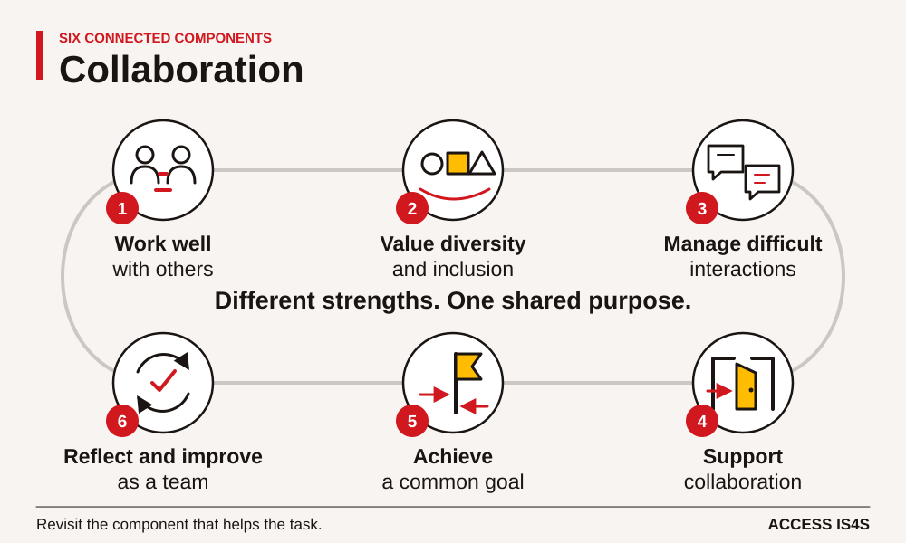
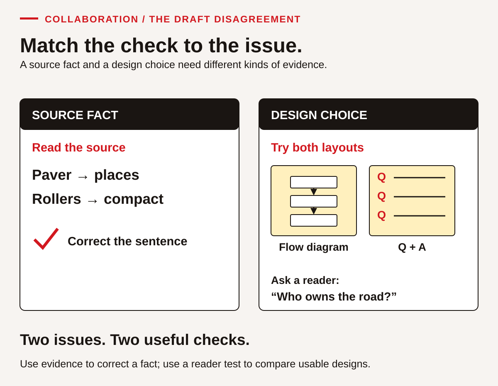
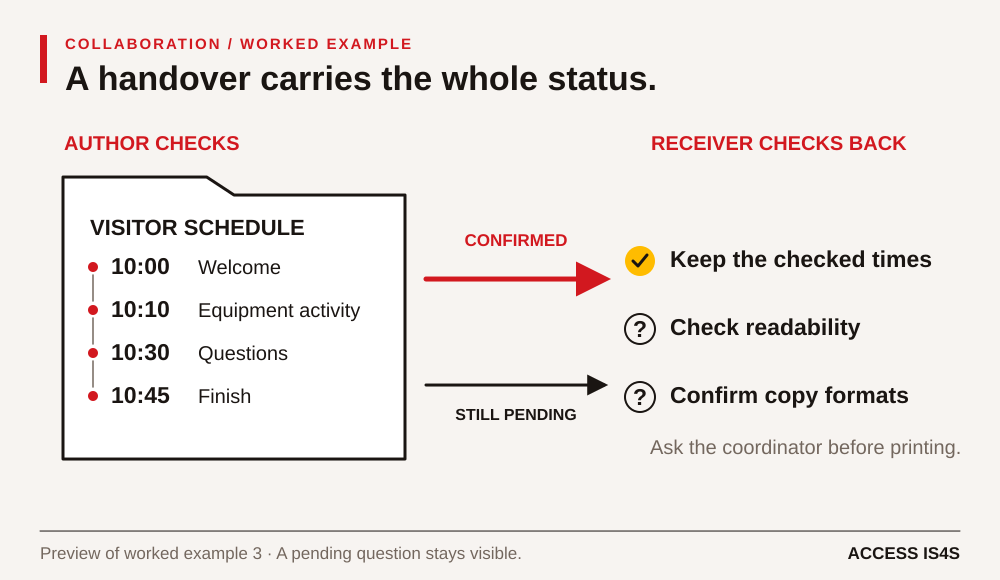

Teaching Collaboration: make participation and coordination observable
A group can produce excellent work while one person makes every decision. It can also share responsibility thoughtfully and still need help correcting a factual error. Teaching Collaboration means attending to both the shared result and the interactions that produced it. Give learners a worthwhile common purpose, teach the practices that support it, and make each person's contribution visible without ranking personalities.
The learner chapter asks a team to prepare a fictional visitor information pack about introductory asphalt learning. The case supplies the facts, timetable and changes. It does not ask learners to simulate a Nation's governance or share community knowledge. In an ACCESS IS4S classroom, relationships matter, and participation must allow different communication modes, time to think and the choice to keep personal information private.
Teach all six components

SkillPlan's components are working well with others; valuing diversity and inclusion; managing difficult interactions; facilitating a collaborative environment; achieving a common goal; and reflecting to improve teamwork (2024, p. 92). These component labels belong to the 2024 source; current federal wording may differ slightly. Use them to notice actions rather than to assign a permanent description of a learner.
CL-01–CL-03 establish the shared purpose, agreements and roles. CL-04–CL-06 address inclusion and permission around knowledge. CL-07–CL-09 separate factual disagreement, design choice and situations needing support. CL-10–CL-15 coordinate, revise and test a shared product. CL-16–CL-18 turn reflection into another attempt. Reading, Writing, Digital and Numeracy contribute to the pack, but their accuracy must be assessed separately from how the team works.
Begin with relationships and clear agreements
The first source strategy builds relationships and trust (p. 93). Use introductions that let people choose what to share. Invite each learner to name a useful contribution or a way they prefer to receive instructions. Avoid assigning roles by confidence, gender, age, cultural identity or previous job title. The quiet learner may be an excellent facilitator when given a clear structure; the confident speaker also needs practice listening.
CL-02 asks for observable working agreements. Help a team replace “be respectful” with “ask before replacing another person's wording” or “offer a printed copy before reviewing the shared screen.” Ask how someone can request a pause, challenge a claim or contribute through writing. Agreements should support participation rather than require disclosure. Check them during the work: an agreement has little value if nobody can use it when decisions become hurried.
Explicitly teach the interaction
The second strategy makes collaboration skills an instructional target (p. 94). Merely putting learners into groups does not teach a handover, a source-based disagreement or a useful invitation. Model one practice, let pairs try it, provide descriptive feedback and repeat with roles exchanged. Show the difference between describing an observable issue and making a judgement about someone.
For a handover, model three parts: what is finished, what is uncertain and what needs checking. The receiver restates the message before continuing. CL-03 and CL-10 offer practice, while CL-11 tests whether another person can use the output accurately. This connects Communication with the document-use demands of task boards, source briefs and draft versions. A spoken handover and a written board can complement one another.
A worked teaching example: fact, preference or process?

Use Case document 2 and CL-07. The draft says a roller places asphalt. The supplied introductory card assigns placement to the paver and compaction to rollers. Say: “This is a factual question with evidence available. Voting would tell us what the group prefers, not whether the sentence matches the source.” Model a correction that identifies the wording and evidence without labelling its author.
The same case includes a preference for a flow diagram versus question-and-answer boxes. Neither layout has been tested. Ask learners to set a criterion: can a visitor quickly find who owns the fictional road? Sketch both versions and ask a reader to use them. Record what the reader finds, then decide. The absence of an agreed correction process is a third issue; it needs a team agreement about checking and approving changes.
Have pairs rehearse this distinction in CL-08, with an observer recording one exact phrase that helped. Stop role-play if it becomes personal or discriminatory. CL-09 explicitly distinguishes ordinary task disagreement, conflicting sources and harmful behaviour needing instructor support. Demonstrating collaboration never requires tolerating harm or inventing a workplace reporting procedure.
Structure group work so everyone can act

The third strategy uses purposeful small-group activity, varied roles and active monitoring (p. 95). Teams of two to four are manageable for this pack, but select grouping to fit the room and access needs. Provide each learner with the source. Rotate coordinator, source checker, drafter and reader-test roles; a person operating the keyboard should not automatically control decisions.
CL-12 gives a bounded five-minute facilitation turn. Observe whether the facilitator states a purpose, invites contributions, checks a dependency and confirms next actions. A written contribution or supported communication route counts. CL-13 adds a change in device access and requested formats. Ask everyone to identify one changed and one unchanged condition before the team revises its board. This makes Adaptability visible without quietly losing a member's role.
Do not stand back until a team fails. Monitor early and offer the smallest useful prompt. If one person has no access to the shared document, repair access before judging contribution. If a team is progressing, ask a question that deepens checking rather than taking over its decision.
Assess contribution, product and improvement separately
The source recommends observation, meaningful tasks, reflection and formative feedback (p. 96). Keep a brief evidence record: action, context, support and effect. “Invited a written response and used it to correct the schedule” is observable. “A natural team player” is not an instructional finding. Include self- and peer feedback, but teach contributors to describe events rather than award popularity scores.
Increase complexity through dependencies, changing resources, multiple perspectives or less obvious solutions. Keep participation conditions fair. Use CL-15 to distinguish product evidence from interaction evidence, then CL-16 to test one improvement. CL-18 brings the six components together. An unobserved role needs another opportunity; it should not be recorded as a failed performance.
All three source grab-and-go patterns remain available (p. 98): a low-stakes shared task followed by reflection, discussion of context-specific social or workplace expectations, and practice with difficult interactions. The visitor pack, CL-02/CL-17 and CL-07–CL-09 respectively provide those routes. Give necessary prerequisites and safe materials even when an initial attempt is used diagnostically. The resource list on p. 97 is a set of leads to preview, not independently verified recommendations.
Sources and companion work: SkillPlan guide, pp. 92–98; Collaboration learner chapter; answer guidance; current federal learning steps.